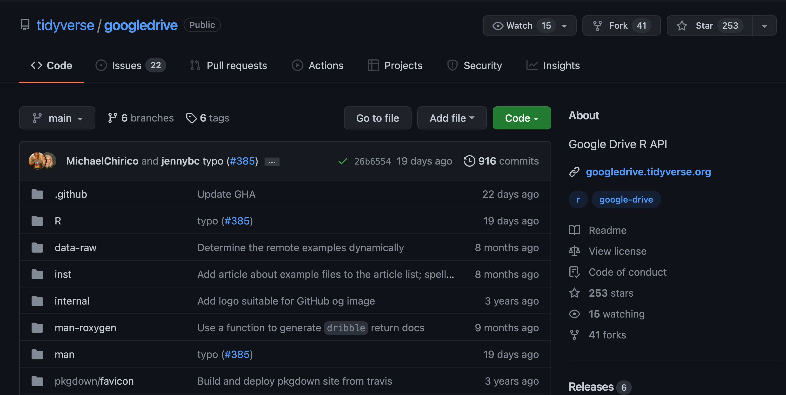
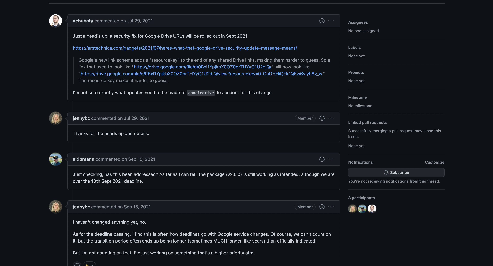
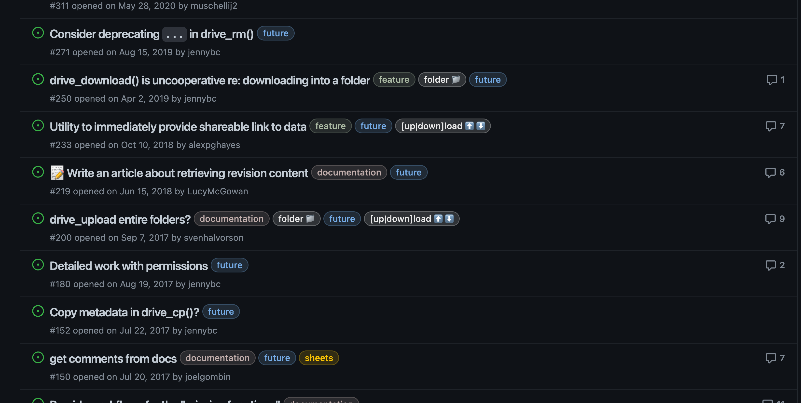
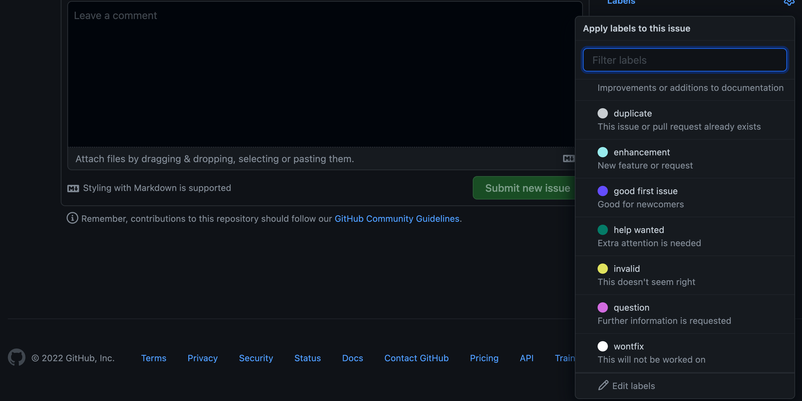
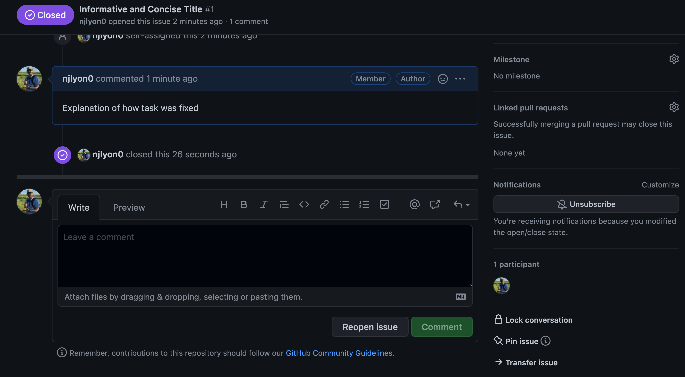

Issues
What is an Issue?

Issues are a convenient way of identifying and delegating tasks within a repository as well as documenting progress over time. They can also be used as a digital ‘lab notebook’ for personal use to brainstorm on a novel topic or preserve important links or supplementary material for easy distribution across a whole team.
Importantly, while issues can definitely be helpful they are not required to successfully use GitHub for collaborating as a team. Issues absolutely have the potential to facilitate division of labor within a team though and are thus worth covering in this training.
An additional function that may be outside of the scope of what you need to use within your team is that it allows non-members to flag issues that they’ve had with code written by your team or request additional functionality that doesn’t yet exist in your framework. Depending on your use of packages in R you may have already opened an issue on an existing R package to do just that!
To see a more complete example of how issues can be used we can examine the open issues of an established R package.
Issues Example with the googledrive Package
Below is the GitHub landing page for the googldrive package and you can see that next to the underlined “Code” tab is an “Issues” tab with a gray circle with the number 22 in it. This number notifies us that as of this screen capture, there were twenty two open issues on this package’s GitHub repository. Note that your GitHub interface may be white but it will not change the position of buttons or tabs.

If you click over to the issues tab you will see the titles of all current “open” (i.e., ongoing) issues on the repository. Each issue has a title and beneath that a unique number following a # as well as how long ago the issue was opened and the GitHub username of the person who opened the issue. On the right side of each issue’s thumbnail you can see the number of comments added to it.

Comments can be used to have a full dialogue among different users – potentially both in and outside of the team responsible for managing the code! The conversational aspect of issues can make them functionally similar to an email thread or messaging app chain. This communication can help keep the solutions to tasks well-documented while ensuring that every member of your group can have their voice heard.

Creating your First Issue
When you first visit the Issues tab of your repository it won’t include any open issues and will look like this.

To create an issue, click the green button and a new page will open that looks like the below.

In this page you can create a brief title (these are better if they are concise while still trying to convey the broader context for the task identified by the issue) and add a longer comment into the body of the issue. That longer comment can be as simple as a few bullet points of what the problem is or as complex as a markdown-formatted hyperlink-supported thesis on the task at hand.
While issue comments are completely free for you to use as you see fit, it is important to remember that your most frequent collaborator is yourself in the future so a future version of yourself will absolutely thank you for including extra information when you first open an issue. In a team setting like this one, extra detail can also really help when the person opening the issue is not the person responsible for editing the code to address it.
In addition to the title and main body of the issue you can also see a sidebar on the right containing other options for adding detail to an issue. In particular, the “Assignees” and “Labels” sections can be useful in delegating a task to a specific person or naming the category that this task falls under respectively.
Returning to our googledrive example for a moment, you can see that the package maintainers use multiple labels on some issues to help communicate across their team what processes are affected by or relevant to each particular issue.

When you are creating your first issue however you won’t have any of those customized labels. However, GitHub does offer some pre-built template labels that may suit your needs and makes adding your own customized labels very approachable.
To see the current label options, click the “Labels” text or the gear to its right and either scroll and click the desired label(s) from the list or scroll to the bottom and click “Edit labels” to create new labels or modify the template labels.

Practice - Labels
What are some labels that might be useful for your project to divide up issues? Can labels divide tasks related to analysis versus visualization of data? Or use them to further subdivide within those categories?
Opening an Issue
Once you’ve filled out the title and comment of the issue the green “Submit new issue” button will become clickable and you can click it to open your issue. You can either add labels or assign users to the issue during the initial opening phase or after the fact.
Issues are automatically viewed as a sequential series of events from the first comment so all future additions to the issue will be added beneath that first comment that defines the title of the issue.
At the bottom of the issue there will be an open text box that you can add to with whatever information you feel is valuable in the context of this task. We will talk about closing issues in a moment but even when issues are closed they are always accessible so all documentation within an issue can be used later and is well worth any energy investment you can make.
There is also not a time limit on issue comments so issues can remain open and active for as long as you find them useful.

Appropriate Issue Scope
As a brief aside from the nuts and bolts of how to create and manage an issue, it is important to discuss appropriate issue scope.
Essentially, an issue should- as much as possible-directly correspond to either a single task or a single conversation. It is not always possible to predict how projects can evolve at the outset so you may find issues spanning multiple tasks despite your best efforts but as much as you can plan to keep a 1-to-1 ratio of tasks to issues you will find delegation and tracking of task completion that much easier.
Personally, I am a longtime believer in S.M.A.R.T. goals (i.e., goals that are Specific, Measurable, Attainable, Relevant, and Time-specific), but there are many established ways of partitioning a larger project to achievable sub-tasks and you should use whichever is most intuitive to you.
If issues seem like something that your group is broadly interested in it may be worthwhile to have a conversation about some general ‘rules of thumb’ for the scope of tasks identified by issues.
Practice - Create an Issue
Now that we’ve covered what issues are and how to open them, let’s take a minute and create some issues on your repository! On your GitHub repository, click over to the Issues tab and create a new issue. This can be either a placeholder just to have experience creating an issue or a real task that you think the team will have to deal with in the future. We are here if you need clarification!
Closing an Issue
So, let’s imagine that you have worked through whatever task you identified and are ready to be done with this issue and move on to the next task.
If you scroll to the bottom of that issue (where the adding comment textbox is) you will see a purple button titled “Close issue”.

After clicking that button a purple check mark will appear on the bottom of the issue’s timeline that identifies the issue as closed and credits the user who closed it.

When you return to your issue list you will see that issue is now absent from the list. However, next to the “[number] Open” button you can see a check mark with the number of closed issues.

Clicking that “Closed” button will access all past issues that are now closed.

So, even if an issue was closed in the distant past of your repository on GitHub, you can still easily access and view all of its contents.
This greatly facilitates the use of issues in tracking problem solving, brainstorm sessions, and supporting documents. The Scientific Computing Support team at NCEAS uses issues as personal lab notebooks (in addition to the aforementioned uses) to ensure that individual process is well documented while still being easily accessible by other team members.
As pointed out earlier though, issues are fundamentally optional to the use of GitHub and may not be needed by your team right now. However, we’d encourage you to try using them in case they do prove helpful to your team!